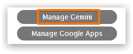
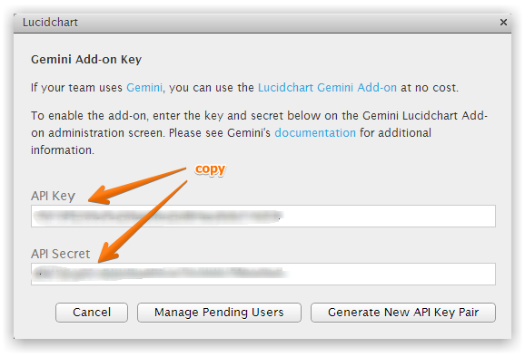
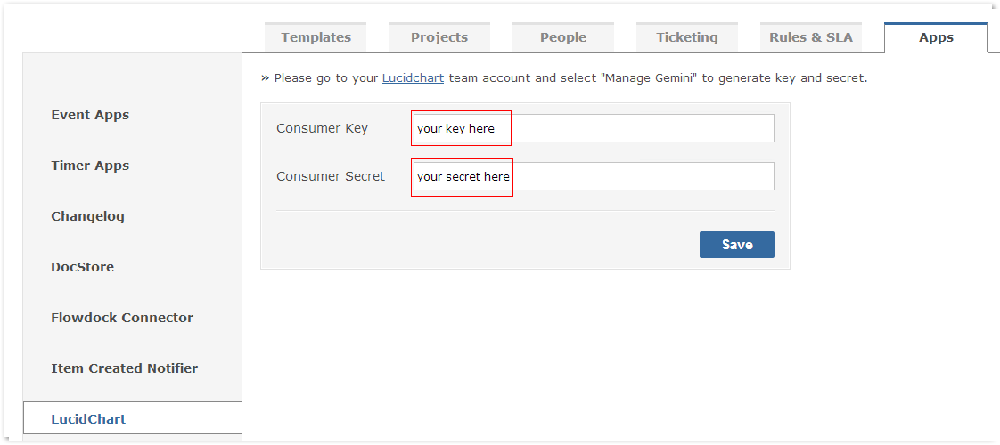
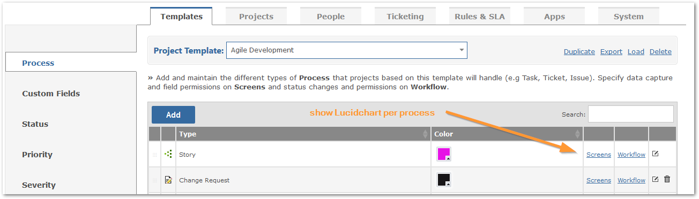
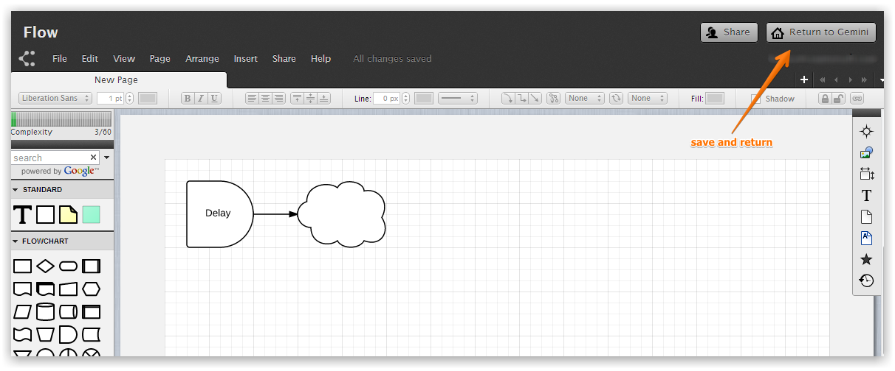

Lucidchart brings diagramming, flow chart and UI mock-up capability right inside your web browser.
Follow the below instructions to configure Gemini and Lucidchart.
Log into Lucidchart and click on the Manage Gemini button.

Copy the API Key and API Secret keys from Lucidchart.

Paste the API Key and API Secret keys in Gemini.

Determine which processes can make use of the Lucidchart connector.

Enable the Lucidchart connector.
NoteIf you do not show the Lucidchart connector then you cannot use it
Viewing an item will display the Lucidchart connector. Click to edit an existing diagram or add a new one.

Click the Return to Gemini button to save and go back to the Gemini item.
